Práctica 4.1: Configuración de un servidor DNS
Sobre las IPs
En la práctica puede verse en las capturas que cambia la dirección de red a partir de cierto punto. Esto es debido a que en clase no tiene la misma dirección de red que la de mi casa.
Introducción
En esta práctica se va a realizar la instalación y configuración del servidor de nombres Bind9.
Este tipo de servidores se encargan de resolver los nombres de host de las URL y es un paso intermedio que aunque invisible al usuario hace una labor importante ya que permite tener direcciones URL con nombres más fáciles de recordar que la dirección a la máquina.
Para que entendamos un poco el funcionamiento de este servidor podemos asemejarlo a un índice de un libro, en el que tienes el nombre del capítulo y en la página en la que se encuentra para que el lector pueda saber a qué pagina dirigirse, pues ese es el funcionamiento a groso modo de este tipo de servidor.
Instalación de Bind9
Para instalar Bind9 en Debian 12, usaremos el gestor de paquetes del sistema ya que este lo proporciona, por lo que el comando a usar es:
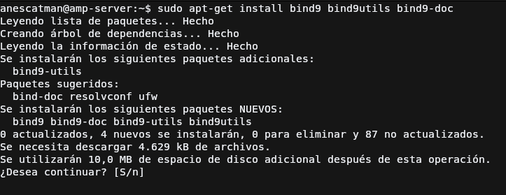Puesto que para la práctica y para el servidor de pruebas, la IPV6 no nos va a hacer ninguna
falta, podemos deshabilitarla cambiando los parámetros de inicio que tendrá el servicio
named, que es el nombre que recibe el servidor Bind9.
Nos dirigiremos al archivo /etc/default/named y en la variable OPTIONS tendremos que añadir
el parámetro -4 al final, tal y como se muestra en la captura.
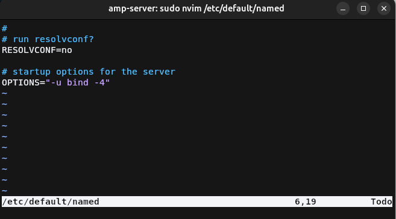
Archivo de agrupación de configuración
Este archivo se encarga de agrupar los tres archivos de configuración principales del servidor Bind9, este generalmente no hay que tocarlo para nada ya que solo se encarga de incluir los diferentes archivos de configuración los cuales son:
named.conf.options: Archivo donde se agrupan las opciones generales del servidor Bind9.named.conf.local: Archivo donde se definen las zonas del servidor Bind9.named.conf.default-zones: Este archivo contiene las zonas por defecto del servidor Bind9. Estas zonas son las del localhost, y la de broadcast, este no lo tocaremos en esta práctica.
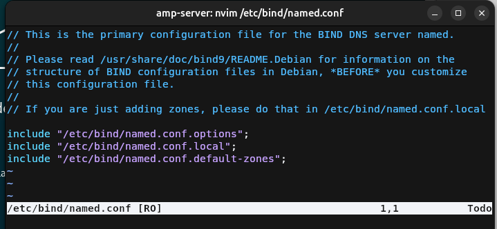
Configuración general
Antes de definir las zonas, tendremos que realizar ciertas modificaciones en el archivo de configuración general.
Copia de seguridad
Cuando se modifican archivos de configuración generalmente se recomienda guardar una copia de seguridad de la última configuración que funciona por si tenemos que volver para atrás, esto se logra ejecutando el siguiente comando:
Lista blanca de peticiones
Para esta práctica vamos a añadir una lista blanca de las redes que pueden preguntar al servidor de nombres, esto se logra mediante el bloque acl en el que deberemos de añadir
la dirección de red de las redes permitidas junto a su máscara de red abreviada. El formato del bloque es:
Direcciones de red
Las direcciones de red se obtiene poniendo los bits de host a 0.
Es decir que para la ip 192.168.115.43/24 la ip de red sería 192.168.115.0/24 ya que el último octeto corresponde a los bits de hosts.
Configuración del servidor
La configuración que vamos a hacer extra es la siguiente:
- Primero desactivamos que escuche peticiones con IPV6, aunque ya se desactivó anteriormente también debemos de hacerlo aquí.
- Indicamos que solo las redes de la lista blanca pueden hacer consultas recursivas a otros DNS para resolver el nombre. Ojo que aquí no las permitimos aún, solo indicamos quienes pueden hacerlas
- Indicamos que ningún equipo que haga una petición a nuestra DNS pueda ser transferido a otra zona de la que accede primeramente.
- Indicamos que el servidor Bind9 escucha en el puerto e ip indicado.
- Permitimos las consultas recursivas en Bind9
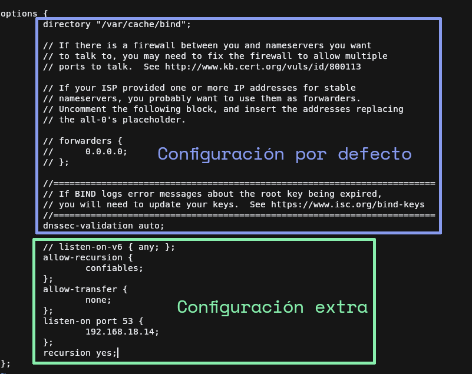
Creación de las zonas DNS
Ahora vamos a definir las zonas directas e inversas para resolver el nombre de dominio que se añada a este.
Tenemos la zona directa que resuelve de nombre a IP y la zona inversa que resuelve de IP a nombre.
Para ir al grano en las configuraciones vamos a explicar los registros necesarios para definir una zona:
-
Registro
SOA(Start Of Authority): Se encarga de almacenar información sobre la zona DNS, tales como la dirección de administrador de la zona, el tiempo de espera entre actualizaciones, etc. Este registro es obligatorio para cumplir con las normas IETF y para realizar transferencias de zonas correctamente, aunque en esta práctica las deshabilitemos.Este registro sigue el siguiente formato
@ IN SOA <servidor de nombres> <direccion del administrador> (...)en donde los puntos suspensivos se indican mediante espacios o saltos de línea la configuración de la zona DNS, el orden es importante ya que equivale a los siguiente:- Número serial: Número que cuando cambia, indica a los servidores DNS secundarios que deben actualizar su copia del archivo de la zona DNS específica.
- Refresco (REFRESH): El tiempo de espera (en segundos) que los servidores DNS secundarios pidan el registro SOA a la zona para comprobar si se ha actualizado.
- Reintento (RETRY): El tiempo de espera (en segundos) que los servidores DNS secundarios tienen que esperar para pedir el registro SOA en caso de que no responda el servidor de la zona.
- Expiración (EXPIRE): Tiempo de espera (en segundos) en el que el servidor secundario si no recibe respuesta, no responderá a las peticiones de la zona.
- TTL: Tiempo (en segundos) en el que los servidores tendrán que cachear los registros.
-
Registro
NS(Names Server): Este es más sencillo que el anterior, este indica que servidor contiene los registros DNS de la zona y nunca deberan de apuntar a un registroCNAME. La sintáxis es@ IN NS <servidor dns>.
Una vez explicado esto ya podemos continuar con la práctica, adelantando que estos dos registros siempre deberan de incluirse al principio de cada zona.
Zona DNS principal
Definición de la zona
Para definir las zonas nos dirigimos al archivo named.conf.local, y en dicho archivo debemos de usar el bloque
zone{...}; para definir las diferentes zonas. La sintáxis es la siguiente:
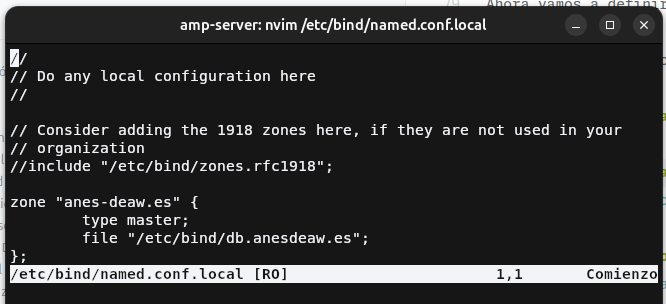
Archivo de la zona
Añadimos los correspondientes registros SOA, NS y un nuevo registro de tipo A. Este indica que el subdominio debian
hará referencia a la IP que le indiquemos, siendo su sintáxis de la siguiente manera: <subdominio> IN A <ip>`.
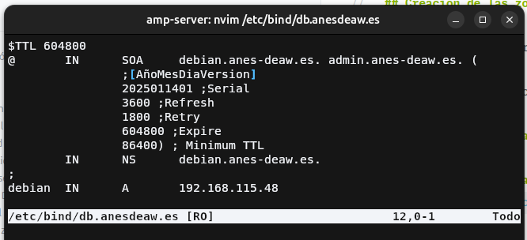
Zona DNS inversa
Definición de la zona inversa
Para definir la zona inversa debemos de usar una sintáxis especial para indicar al servidor DNS que esa zona será para resolver inversamente de IP a nombre de dominio.
El nombre de la zona es <direccion de red sin los octetos de host>.in-addr.arpa. Por lo demás es igual a crear una zona normal.
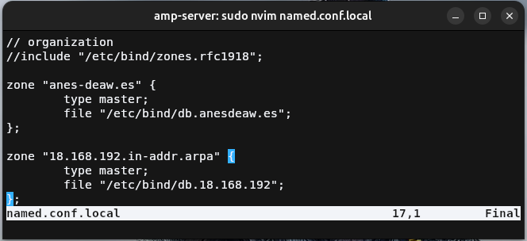
Archivo de la zona inversa
Añadimos los correspondientes registros SOA, NS y un nuevo registro de tipo PTR.
Este tipo de registro es el contrario al tipo A, es decir vincula una IP con un nombre. Bien esta IP que se añade
al registro va invertida, es decir que si la IP es 192.168.18.14, en el registro va 14.18.168.192. Y gracias que la
zona se llama 18.168.192.in-addr.arpa (en mi caso) esto permite que en el registro en vez de colocar todo el número
solo coloquemos la parte de host, es decir 14.
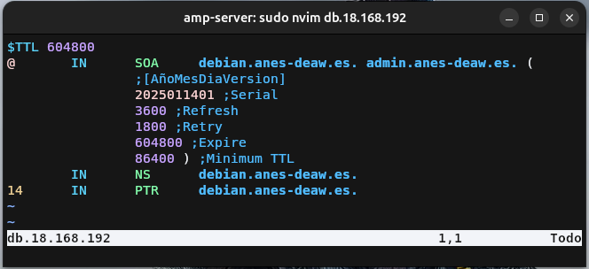
Comprobación del funcionamiento del DNS
Comprobamos configuración
Para comprobar que todo funciona correctamente tenemos que ejecutar los dos siguientes comandos, fijándonos si en las salidas de estos nos devuelven un OK. En caso contrario nos indicará que tenemos mal aunque a veces puede ser un poco confuso el mensaje.
# Comprobar la zona directa
sudo named-checkconf <archivo de la zona> <archivo de la zona inversa>
# Comprobar la zona inversa
sudo named-checkconf <archivo de la zona inversa> <archivo de la zona>
Una vez tenemos OK en las dos zonas, podemos reiniciar el servicio de Bind9 para aplicar los cambios, esto se hace
con el siguiente comando:
En caso de que queramos comprobar si todo ha sido cargado correctamente, usamos el siguiente:
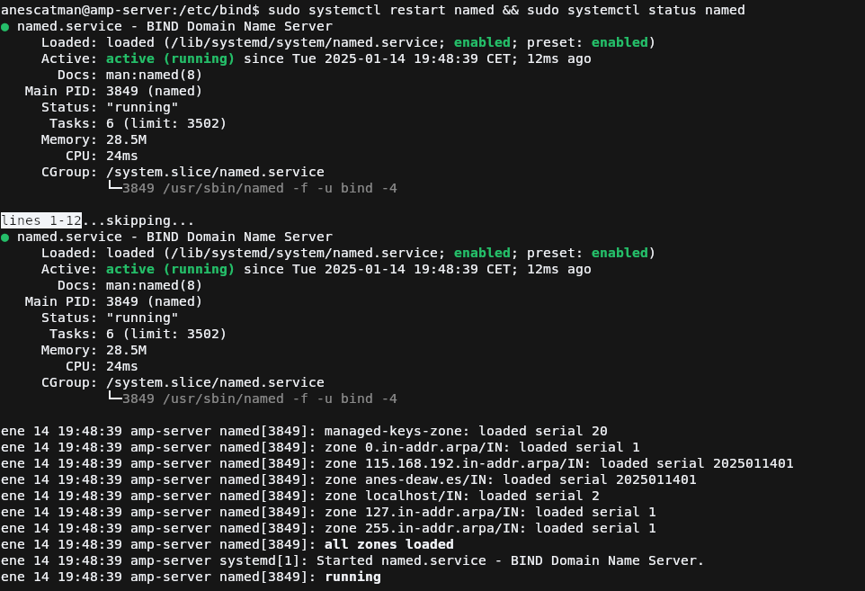
Comprobamos las resoluciones de nombre con dig
Para comprobar que todo funciona correctamente primeramente debemos de configurar nuestro sistema para añadir el servidor DNS para que pregunte a este además del por defecto, en mi caso con Ubuntu sería en la configuración de la red conectada.
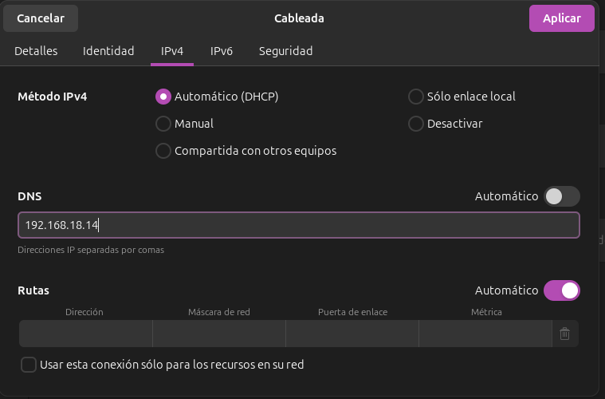
Sobre la configuración del adaptador
Para realizar la prueba, lo normal es añadir el DNS por defecto y antes de este el DNS que hemos configurado
pero me ha ocurrido que no había forma de que redigiera la consulta a mi DNS a no ser que lo pusiera solo, por lo
que por ello está solo. La configuración correcta sería: 192.168.18.14,192.168.18.1.
Ahora para ver si nos resuelve correctamente el nombre, debemos de usar el comando:
Y nos tiene que devolver que en el partado de QUESTION pedimos el registro de tipo A con esa ip para que después
en el apartado ANSWER nos indique la misma cabecera pero con la IP del registro. Tal y como se ve en la captura.
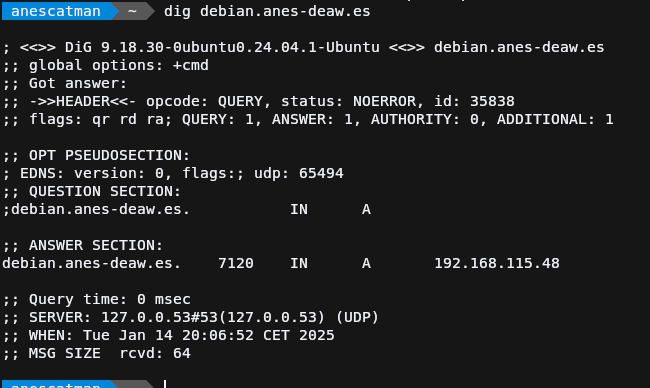
Ahora para ver si nos resuelve correctamente el nombre, debemos de usar el comando:
Y nos tiene que devolver que en el partado de QUESTION pedimos el registro de tipo OTR con esa ip para que después
en el apartado ANSWER nos indique la misma cabecera pero con el nombre al que apunta el registro. Tal y como se ve en la captura.
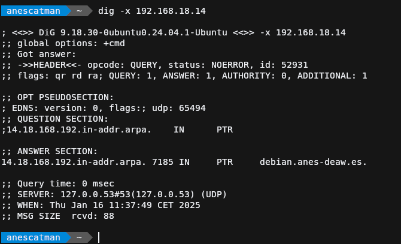
Tarea
Configura el DNS para que resuelva el nombre de vuestro sitio web de la práctica 3.5 y de la 3.2.
Recuerda que con nuestra configuración actual, para acceder a los sitios web necesitaremos añadir el dominio deaw.es en el nombre.
Añadir los registros DNS
$TTL 604800
@ IN SOA debian.anes-deaw.es. admin.anes-deaw.es. (
;[AñoMesDiaVersion]
2025011401 ;Serial
3600 ;Refresh
1800 ;Retry
604800 ;Expire
86400) ; Minimum TTL
IN NS debian.anes-deaw.es.
;
debian IN A 192.168.18.14
pratresdos IN CNAME manusiro-practica32.netlify.app
pradoscinco IN A 192.168.18.16
Cuestiones
Cuestión 1
¿Qué pasará si un cliente de una red diferente a la tuya intenta hacer uso de tu DNS de alguna manera, le funcionará?¿Por qué, en qué parte de la configuración puede verse?
El servidor intentará resolver su consulta pero solo la resolverá si el registro que busca está en el mismo servidor DNS.
En caso de tener que reenviar la consulta a un servidor DNS, esto lo hará únicamente si está dentro de la lista blanca indicada anteriormente.
Cuestión 2
¿Por qué tenemos que permitir las consultas recursivas en la configuración?
Debemos permitirlas ya que así en caso de que no encuentre el registro que busca en el servidor actual, este podrá delegar esta consulta a otros servidores de nombres indicados en el registro de DNS.
Cuestión 3
El servidor DNS que acabáis de montar, ¿es autoritativo? ¿Por qué?
El servidor DNS que hemos montado se puede considerar autoritativo debido a que sería el último paso en la consulta de resolución de nombres para obtener a donde apunta el recurso que buscamos.
Siguiendo el esquema de la cuestión 9, sería el "anescdev.es DNS".
Cuestión 4
¿Dónde podemos encontrar la directiva $ORIGIN y para qué sirve?
En los archivos de zona podemos encontrar $ORIGIN <subdominio-dominio> y sirve para que en los registros que estén debajo
de esta directiva se le añada al final el valor de origin siempre y cuando el registro no termine en . Es decir en
deaw.es.
Cuestión 5
¿Una zona es idéntico a un dominio?
No ya que un dominio es al final un nombre, y detrás de este se encuentra la zona DNS.
Cuestión 6
¿Pueden editarse los archivos de zona de un servidor esclavo/secundario?
No pueden ya que estos se actualizan mediante transferencia de zona de sus servidores maestros.
Cuestión 7
¿Por qué podría querer tener más de un servidor esclavo para una misma zona?
Por ejemplo para tener siempre disponibilidad del servidor DNS en caso de que se caiga por diversos motivos, como un ataque DDOS, o un problema en la infraestructura.
Cuestión 8
¿Cuántos servidores raíz existen?
Ciertamente existen bastantes servidores raíz, pero contando los principales que más se usan hacen un total de 13.
Cuestión 9
¿Qué es una consulta iterativa de referencia?
Es una consulta que para no entrar en mucho detalle va por bloques y cada bloque tiene un servidor DNS que la resuelve, vayamos por partes.
- Primeramente tenemos el servidor DNS que agrupa todos los servidores raíz, que reenvía al servidor DNS correspondiente la consulta,
- Después este vuelve a reenviar la petición al siguiente DNS y así sucesivamente hasta que uno de la respuesta definitiva.
Gráficamente sigue el siguiente esquema: 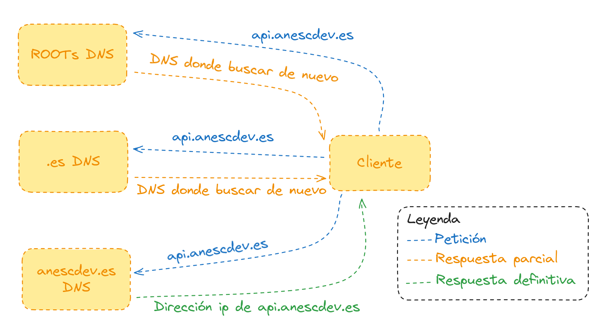
Para no cargar mucho el esquema quiero matizar que donde dice "DNS donde buscar de nuevo", en realidad es una respuesta DNS parcial, la cual va formando la respuesta definitiva.
Cuestión 10
En una resolución inversa, ¿a qué nombre se mapearía la dirección IP 172.16.34.56?
Al que le indiquemos en el registro PTR de la zona DNS inversa.